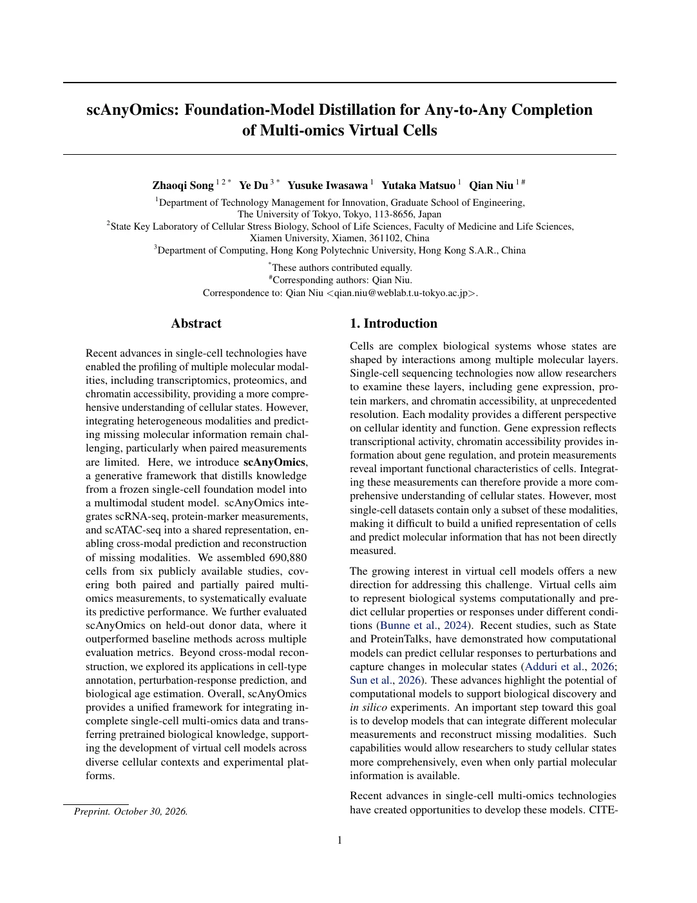
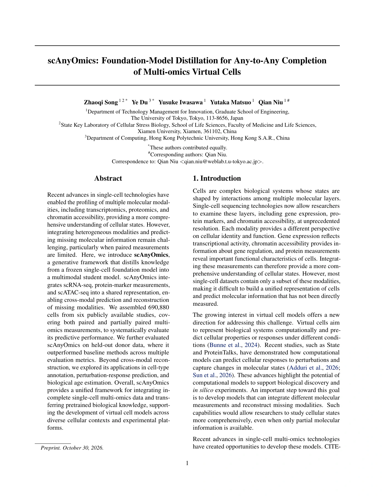

Searchable research paper · 2026
scAnyOmics Foundation-Model Distillation for Any-to-Any Completion of Multi-omics Virtual Cells

Any-to-Any multi-omics completion
scAnyOmics distills knowledge from frozen single-cell foundation models into a multimodal student. Given any available subset of RNA, ADT, and ATAC measurements, it reconstructs missing modalities and learns a shared representation of cellular state.
Cell Type AnnotationPerturbation ResponseAgeing Clock
The manuscript evaluates cross-modal reconstruction and explores these downstream applications.

Select the page to enlarge. Download PDF for the original document.